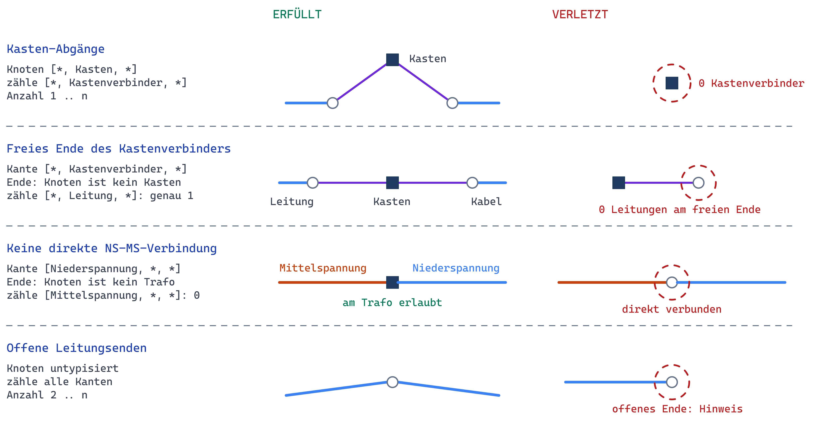
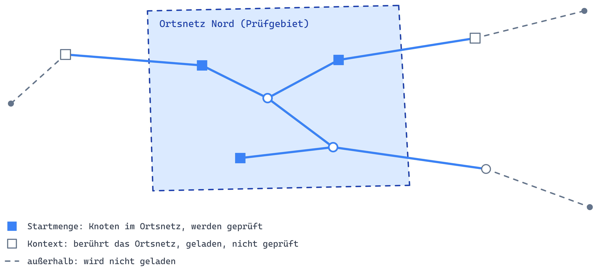

Blatt 6 · Validierung
Regeln, die Fehler im Netz finden
Eine Regel schaut sich ein Element an und zählt seine direkten Nachbarn. Liegt die Anzahl außerhalb der erlaubten Spanne, ist das eine Verletzung. Damit lassen sich die typischen Topologiefehler in einem Leitungsnetz finden, ohne Fachwissen in SpatialNET einzubauen.
Aufbau einer Regel
| Teil | Bedeutung | Beispiel |
|---|---|---|
| Prüfe | welche Elemente geprüft werden: Knoten oder Kanten, mit Typmuster | Knoten [*, Kasten, *] |
| Ende | nur bei Kanten: an welchem Ende gezählt wird, beschrieben über den Knoten dort | Knoten ist kein [*, Kasten, *] |
| Zähle | welche Nachbarn gezählt werden, mit Typmuster (mehrere Muster = ODER) | Kanten [*, Kastenverbinder, *] |
| Anzahl | erlaubte Spanne von bis | 1 .. n, genau 1, 0 |
„Nachbarn“ heißt: bei einem Knoten die Kanten, die an ihm hängen; bei einer Kante die anderen Kanten an ihrem Ende. Weiter schaut eine Regel nicht. Deshalb braucht eine Prüfung keinen Pfad und keinen Schaltzustand.
Die Schreibweise unten zeigt den Inhalt. Gespeichert wird eine Regel als Zeile einer Tabelle: ID, Schwere, was geprüft wird, Ende-Filter, was gezählt wird, Min und Max, optional eine Ebene. Das GIS-Team pflegt die Regeln in gView in der Netzwerk-Konfiguration (Carto, Tab Rules), eine eigene Regelsprache gibt es nicht (ADR 0052).
Vier Beispiele

1 · Kasten-Abgänge
Jeder Kasten hat mindestens einen Kastenverbinder. Gilt für jede Spannungsebene, weil die erste Facette ein Platzhalter ist.
Prüfe Knoten [*, Kasten, *] Zähle Kanten [*, Kastenverbinder, *] Anzahl 1 .. n
2 · Freies Ende des Kastenverbinders
Am Ende, das nicht am Kasten hängt, schließt genau eine Leitung an, egal ob Kabel oder Freileitung. Beide Ketten Leitung, Kastenverbinder, Kasten, Kastenverbinder, Leitung und … Kastenverbinder, Kabel erfüllen sie.
Prüfe Kante [*, Kastenverbinder, *] Ende Knoten ist kein [*, Kasten, *] Zähle andere Kanten [*, Leitung, *] Anzahl genau 1
3 · Keine direkte Verbindung von Nieder- und Mittelspannung
Die beiden Ebenen dürfen sich nur am Trafo treffen. Ohne den Ende-Filter würde die Regel an jedem Trafo anschlagen. Mit getrennten Ebenen beim Bauen (Blatt 7) entstehen solche Verbindungen gar nicht erst; die Regel findet dann nur noch, was eine Verbindungsregel ausdrücklich erlaubt.
Prüfe Kante [Niederspannung, *, *] Ende Knoten ist kein [*, Trafo, *] Zähle andere Kanten [Mittelspannung, *, *] Anzahl 0
4 · Offene Leitungsenden
Ein Hilfsknoten mit nur einer Kante ist ein offenes Ende. Das kann gewollt sein (Kabelende in Reserve), deshalb eher als Hinweis gedacht, den man quittieren kann. untyped trifft auch die Hilfstypen der Ebenen.
Prüfe Knoten untyped Zähle alle Kanten Anzahl 2 .. n
Wie gezählt wird
- Zwei parallele Kanten zwischen denselben Knoten zählen als zwei.
- Eine Kante, die am selben Knoten beginnt und endet, zählt einmal.
- Mehrere Muster in „Zähle“ werden addiert, z. B. Kasten oder Trafo.
- Eine Kantenregel wird an jedem gewählten Ende für sich geprüft, nicht über beide Enden summiert.
- Der Schaltzustand spielt keine Rolle: Regeln prüfen, was gebaut ist, nicht wie geschaltet ist.
- Eine Regel mit Ebene prüft nur Elemente und zählt nur Kanten dieser Ebene. Eine Suche mit Ebene schränkt alle Regeln so ein.
Was eine Prüfung liefert
Eine Liste von Verletzungen, Stück für Stück, damit sie direkt in eine Fehlertabelle fließen kann. SpatialNET repariert nichts.
| Regel | Element | Typ | gezählt | erlaubt | Koordinate |
|---|---|---|---|---|---|
| Kasten-Abgänge | K-0815 | 15 · NS.Kasten | 0 | 1 .. n | -12 301.4 / 5 342 990.2 |
| Freies Ende | KV-91 | 13 · NS.Kastenverbinder | 0 | genau 1 | -12 288.0 / 5 342 975.6 |
| Offene Enden | N-a41c | 0 · untypisiert | 1 | 2 .. n | -12 250.7 / 5 343 012.9 |
Weil auch Hilfsknoten eine Koordinate haben, lässt sich jede Verletzung auf der Karte zeigen. Weil ihre IDs aus der Koordinate abgeleitet werden, bleibt eine quittierte Verletzung auch nach dem nächsten nächtlichen Neubau quittiert.
Ein Gebiet prüfen
Prüfungen lassen sich auf ein Gebiet beschränken, etwa ein Ortsnetz (Shard), ein Polygon oder einen Kartenausschnitt. Änderungen im GIS sind erst nach dem nächsten Neubau im Netz. Für eine schnelle Prüfung direkt beim Speichern kann der Host ein temporäres Netz nur für das betroffene Ortsnetz bauen (in gView noch nicht umgesetzt):

- Objekte holenAlle Punkte und Linien, die das Ortsnetzpolygon berühren, ungeschnitten.
- Netz bauenDer Builder baut daraus ein Netz im Speicher, ohne Datenbank.
- PrüfenStartmenge sind nur die Knoten im Polygon. Der Host wählt die Regeln, die für diesen Fall passen.
- AnzeigenVerletzungen erscheinen direkt beim Bearbeiter, das gespeicherte Netz bleibt unverändert.
Was Regeln nicht prüfen
| Frage | Wo sie hingehört |
|---|---|
| Ist jeder Kunde von einer Station versorgt? | Trace, siehe Blatt 5. Das ist keine lokale Frage. |
| Passt der Querschnitt der Leitung zur Sicherung? | Host. Fachattribute stehen nicht im Netz. |
| Liegen zwei Kästen übereinander? | Builder. Das ist ein Fehler beim Bauen oder wird zusammengeführt, siehe Blatt 2. |
| Liegt eine Muffe zufällig auf einer Leitung einer anderen Ebene? | Builder, mit Verbindungsregeln: Report meldet die Stelle beim Bauen, siehe Blatt 7. |